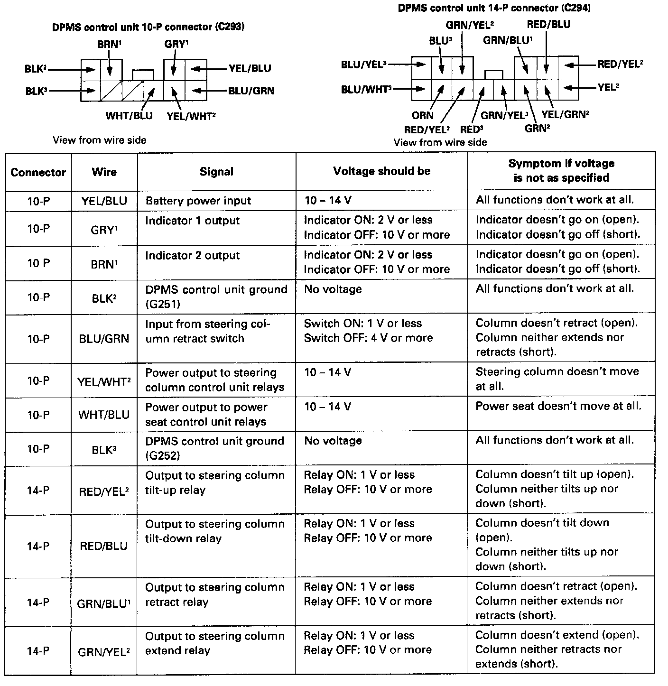
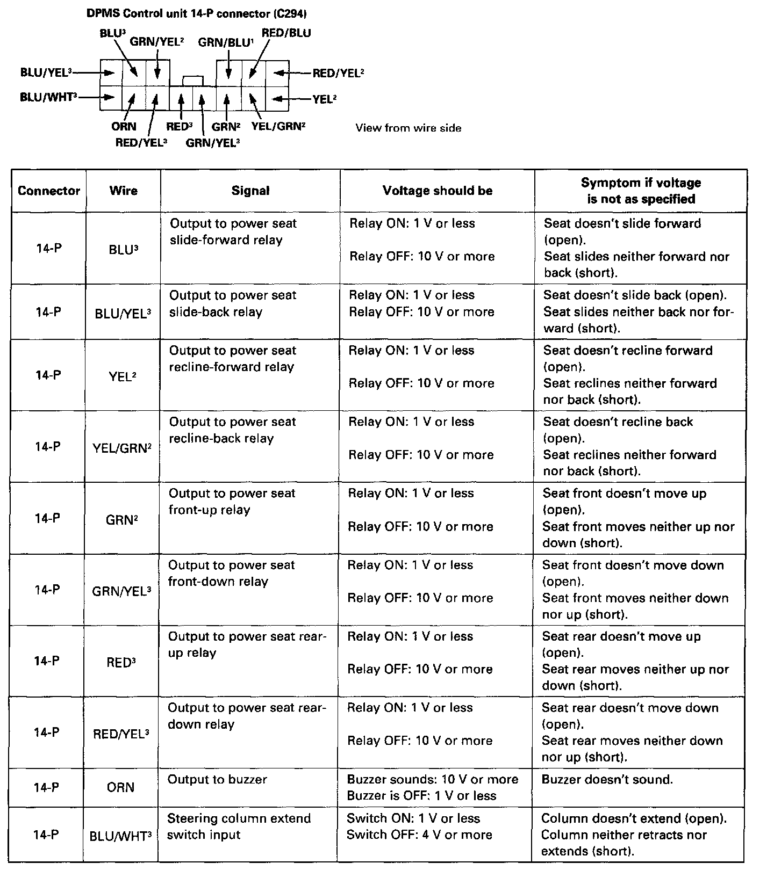
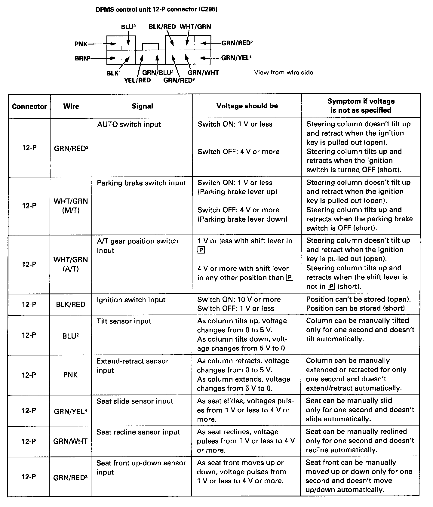
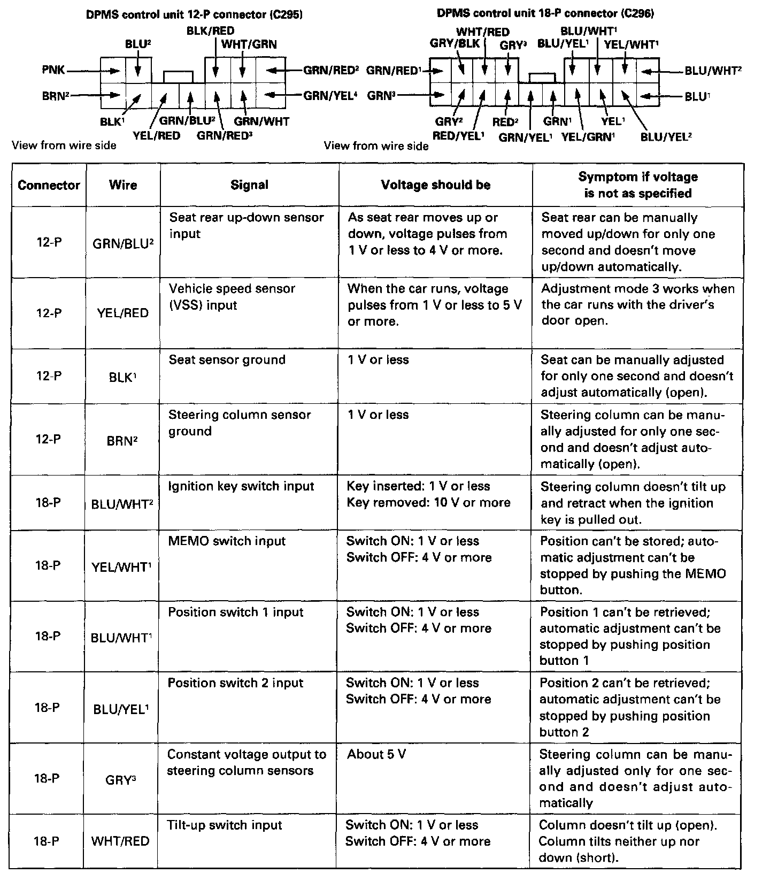
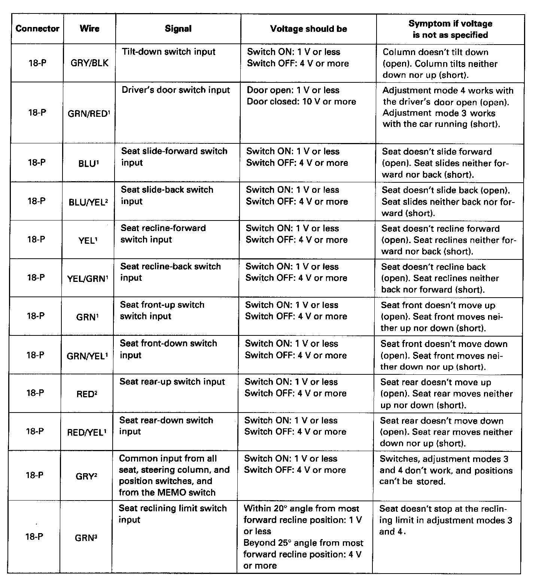

Power Seat Control Module: Testing and Inspection
DPMS CONTROL UNIT INPUT/OUTPUT SIGNALSUse this chart for a quick check (with all connectors connected) of the input signals to and the output signals from the driving position memory system (DPMS) control unit.




